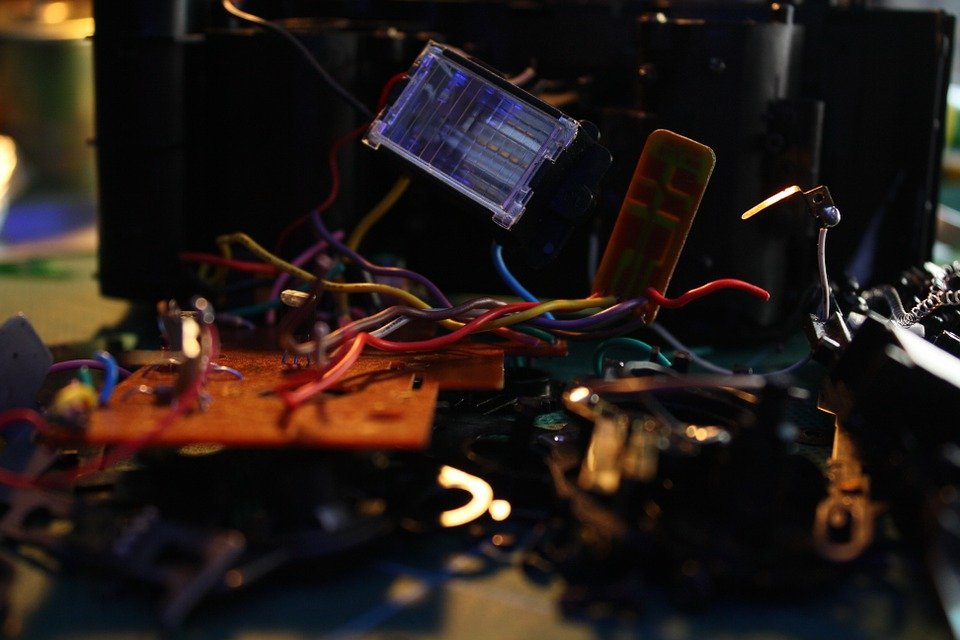
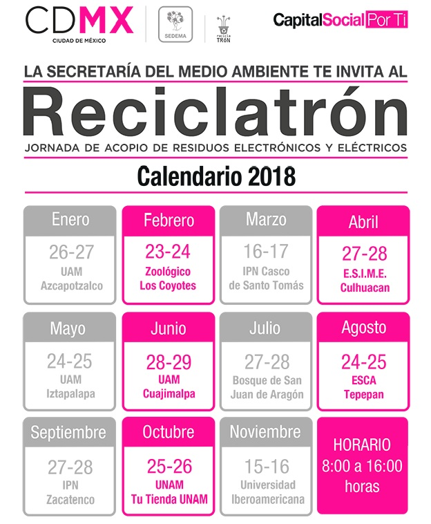
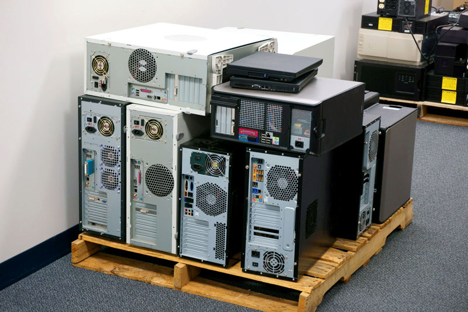

ROBOTS
Los desechos electronicos sirven para hacer ROBOTS

Olvídate de China:
Tailandia ya es el nuevo vertedero electrónico del mundo

Consulta el Calendario Reciclatron de la SEDEMA
Son eventos Totalmente Gratuitos
